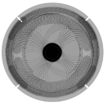
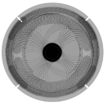
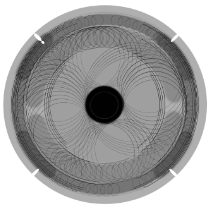

XIYA LI
CV
2016 - 2020
xiyalixiya@outlook.com
@xiyatimetravelling
Hi! I am an industrial designer.
My design focuses on ergonomics and positive emotion by appropriate forms and colours. I am passionate about different approaches to sustainability in design, such as modularity, repairability, and performance structures.
Industrial design(BFA) University of Illinois at Urbana-Champaign
Design products(MA) Royal College of Art
PLEASE ROTATE ->
LANDSCAPE
MODE

 
XIYA LI

XIYA LI